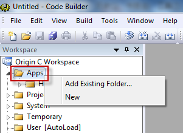
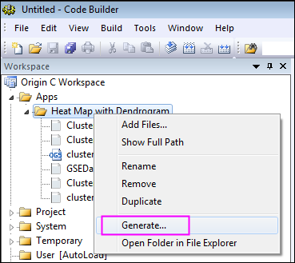
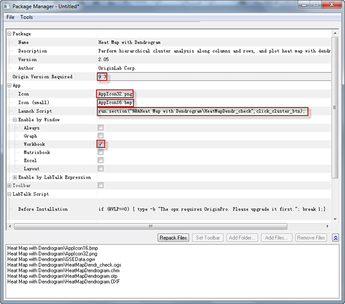

Apps für Origin erstellen und aktualisieren
Create-Update-Apps
Zusammenfassung
Apps sind benutzerdefinierte Applikationen für Origin, die spezifische Aufgaben der grafischen Darstellung und/oder Analyse durchführen. Origin-Anwender können nach Apps suchen und diese von dem Bereich Dateiaustausch der OriginLab-Webseite herunterladen und installieren. Origin-Anwender können Apps erstellen und mit anderen über die Seite Dateiaustausch teilen. Dieses Tutorial enthält die Richtlinien zum Erstellen einer Apps und ausführlich beschriebene Schritte zum Erstellen, Hochladen und Modifizieren einer App.
Was Sie lernen werden
Dieses Tutorial zeigt Ihnen, wie Sie:
- Eine App erstellen
- Eine App auf die Webseite Dateiaustausch hochladen
- Eine App modifizieren und zur Genehmigung einsenden
Spezifikationen für App-Dateien
Die folgenden Dateien werden für Apps unterstützt/gebraucht:
Dateien für Symbol
-
-
Datei für Symbol (erforderlich)
- Dies sollte eine png-Datei mit einer Größe von 32*32 Pixel sein. Dieses Symbol wird im Fenster der Apps-Galerie in Origin angezeigt.
-
Datei für kleines Symbol (optional)
- Dies sollte eine bmp-Datei mit einer Größe von 16*16 Pixel und 16 Farben (4 Bits) sein. Sie ist über Ansicht: Symbolleisten: Schaltflächengruppe Apps in Origin verfügbar. Sie kann als eine Schaltfläche verwendet werden, indem sie zu einer Symbolleiste hinzugefügt wird.
Programmierungsdateien
Es werden X-Funktions-, *.ogs-, *.c-, *.h- und DLL-Dateien unterstützt. Beachten Sie, dass der Name der X-Funktionsdatei nicht der mit dem Namen der *.c-Datei identisch sein sollte, wenn beide existieren.
Weitere Dateien
Alle anderen Dateien wie die zur Dokumentation (*.chm, *.pdf), Bilddateien, Beispieldaten etc. können eingebunden werden.
Eine App erstellen
1. Gehen Sie zu dem Ordner Apps im Bereich AppData Ihrer Origin-Installation. Sie können den folgenden Befehl im Befehls-/Skriptfenster eingeben, um zu diesem Ordner zu navigieren:
%@A=; // The output can be, e.g., C:\Users\XXX\AppData\Local\OriginLab\Apps\
2. Öffnen Sie den Ordner in dem Pfad, der in Schritt 1 gefunden wurde, und erstellen Sie hier einen Unterordner. Beachten Sie, dass der Name des Unterordners als der Name Ihrer App verwendet wird. Legen Sie die Dateien für Ihre App in diesem Unterordner ab.
3. Starten Sie Origin und klicken Sie auf die Schaltfläche Code Builder  auf der Origin-Bedienoberfläche.
auf der Origin-Bedienoberfläche.
4. Klicken Sie im Fenster Code Builder mit der rechten Maustaste auf den Ordner Apps im linken Bedienfeld Arbeitsplatz. Wählen Sie Vorhandenen Ordner hinzufügen im Kontextmenü und navigieren Sie zum in Schritt 2 erstellten Ordner, um ihn hinzuzufügen. Erweitern Sie den Ordner im Feld Arbeitsplatz. Alle Dateien im dem Ordner werden aufgelistet.
Beachten Sie, wenn Sie keinen vorhandenen App-Ordner haben, dass Sie im Kontextmenü Neu wählen, um einen neuen Unterordner im App-Ordner zu erstellen. Wenn Sie mit der rechten Maustaste auf eine Datei klicken, können Sie wählen, die Datei zu entfernen. Klicken Sie mit der rechten Maustaste auf den Ordner. Sie können mehr Dateien hinzufügen, sogar Dateien, die sich nicht im aktuellen Ordner befinden.
-
- 
5. Klicken Sie mit der rechten Maustaste auf den neu erstellten App-Ordner im Arbeitsplatz des Code Builders und wählen Sie Erzeugen im Kontextmenü. Der Dialog Packdateien verwalten wird geöffnet.
-
- 
6. Tun Sie im Dialog Packdateien verwalten Folgendes:
-
Zweig Paket:
-
Name
- Ändern Sie nicht das Feld Name, weil sich sonst auch der Ordnername ändert.
-
Beschreibung
- Geben Sie Beschreibungen der App in diesem Feld ein. Die Beschreibungen werden im Abschnitt Summary (Zusammenfassung) auf der Webseite Dateiaustausch angezeigt.
-
Version
- Geben Sie die aktuelle Version der App an. Sie können zwei Dezimalstellen verwenden, z. B. 1.11.
-
Erforderliche Origin-Version
- Geben Sie die erforderliche Origin-Version an. Für Origin 2016 sollten Sie 9.3 statt 2016 angeben.
-
Zweig App:
-
Symbol
- Geben Sie den Dateinamen für das Symbol an, das im Fenster der App-Galerie angezeigt werden soll.
-
Symbol (klein)
- Geben Sie den Dateinamen für das kleine Symbol an, das in der Symbolleiste verwendet wird.
-
Skript starten
- Das auszuführende LabTalk-Skript, nachdem Sie auf das Symbol der App geklickt haben. Wenn Sie einen X-Funktions-Dialog öffnen möchten, können Sie Ihr Skript folgendermaßen schreiben: xfname -d; Sie können Ihr Skript auch auf einen Abschnitt in der ogs-Datei zielen lassen und diesen Abschnitt ausführen, z. B.. run.section(%Afoldername\ogsname,sectionname).
-
Nach Fenster aktivieren
- Legen Sie den/die aktive/n Fenstertyp/en fest, die für die App aktiviert werden sollten. Beispielweise sollte das Diagrammfenster für die Latex App, aktiv sein.
 |
Auch wenn es selten erforderlich sein wird, können Sie festlegen, dass Ihre App für Notizfenster aktiviert ist, indem Sie den Knoten Nach LabTalk-Ausdruck aktivieren erweitern und neben LabTalk-Ausdruck Folgendes eingeben:
note.active=1
|
-
Zweig LabTalk-Skript:
-
- Legen Sie das LabTalk-Skript für vor und nach der Installation sowie vor der Deinstallation fest.
-
- 
7. Wenn die Einstellungen in Packdateien verwalten beendet sind, klicken Sie im Menü auf Datei: Speichern. Die .opx-Datei wird gespeichert. Der opx-Name kann sich vom Ordnernamen unterscheiden. Die opx-Datei für eine App ist nun fertig. Sie können die Datei einfach per Drag&Drop in Origin ziehen, um sie zu installieren. Beachten Sie, dass Sie Origin möglicherweise nicht als Administrator ausführen dürfen, um die Datei in Origin zu ziehen.
Eine App auf die Webseite Dateiaustausch hochladen
Wenn die Paketdatei der App fertiggestellt ist, können Sie sie auf die Webseite Dateiaustausch hochladen, um sie mit der Öffentlichkeit zu teilen. Dazu folgen Sie den Schritten unten:
- Gehen Sie zur Webseite Dateiaustausch und klicken Sie auf Submit a file unten rechts, um die Seite Submit File zu öffnen. Wählen Sie Dateityp (File Type) als App und geben Sie die übrigen erforderlichen Informationen ein, Dateikategorie (File Category), Erstellt mit Origin: (Created using Origin:) etc. Beachten Sie, dass die Informationen, die in dem App-Paket enthalten sind, automatisch extrahiert werden, wie Origin-Version mindestens erforderlich (Minimum Origin Version Required), Titel (Title), Zusammenfassung (Summary).
- Laden Sie die OPX-Paketdatei für die App und den Screenshot hoch, klicken Sie auf Submit (Senden), um Ihre App einzusenden, und erstellen Sie eine im Dateiaustausch eine Unterseite für die App.
- Sie können die OPX-Datei dann von der Webseite, die Sie erstellt haben, herunterladen und sie per Drag&Drop in Origin ziehen, um sie zu testen. Der opx-Datei wird während des Downloads eine Paket-ID zugewiesen.
- Sie können mit dem Bearbeiten der Webseite für Ihre App fortfahren. Wenn Sie fertig sind, können Sie auf die Schaltfläche Update klicken, um die Webseite zu aktualisieren.
- Wenn Sie bereit sind, Ihre App freizugeben, klicken Sie auf die Schaltfläche Request Approval (Genehmigung anfordern) unten im Formular Update. OriginLab wird Sie per E-Mail benachrichtigen, wenn Ihre App genehmigt wurde. Der Genehmigungsstatus wird ebenfalls auf der Seite Update File (Datei aktualisieren) durch die Optionen OriginLab Tested (Von OriginLab geprüft) und OriginLab Approved (Von OriginLab genehmigt) angezeigt.
- Sobald Ihre App genehmigt wurde, wird sie automatisch in der Menüliste Hilfsmittel: Apps auf Dateiaustausch gezeigt.
Eine App modifizieren
App-Einstellungen modifizieren
- Wählen Sie Hilfsmittel: Packdateien verwalten im Origin-Menü aus. Wählen Sie Hilfsmittel: Installierte Pakete durchsuchen im Dialogmenü von Packdateien verwalten. Wählen Sie die App und klicken auf Öffnen.
- Sie können die Einstellungen im Dialog ändern. Wenn Ihre Dateien im Ordner modifiziert sind, können Sie auf die Schaltfläche Dateien neu packen klicken.
- Wählen Sie Datei: Speichern, um die App-OPX-Packdatei zu speichern.
Dateien des App-Ordners hinzufügen, entfernen oder ändern
Wenn Sie im App-Ordner Dateien hinzufügen, entfernen oder Dateinamen ändern müssen, können Sie diese Operationen durchführen, indem mit der rechten Maustaste auf den App-Ordner im Feld Arbeitsplatz im Code Builder klicken und die entsprechende Option im Kontextmenü auswählen. Wenn Sie fertig sind, klicken Sie auf Erzeugen im Kontextmenü, um das App-Paket neu zu erzeugen.
Beachten Sie, dass beim Entfernen von Dateien oder Ändern von Dateinamen die ursprünglichen Daten im App-Ordner unter C:\Users\XXX\AppData\Local\OriginLab\Apps\ bleiben sollten, auch wenn sie nicht verwendet werden, da ansonsten die alten Einstellungen in der opx-Datei nicht im Dialog Packdateien verwalten beibehalten werden, wenn Sie auf die Schaltfläche Erzeugen klicken.
Modifiziertes OPX auf die Webseite Dateiaustausch hochladen
Melden Sie sich an der Origin-Webseite an, gehen Sie zur Seite des Dateiaustauschs, die Sie für Ihre App erstellt haben, und laden Sie die aktualisierte OPX-Datei auf die Seite des Dateiaustauschs hoch. Aktualisieren Sie die Webseite nach Bedarf, einschließlich der Hinweise, was in der aktuellen Version der App aktualisiert wurde. Anwender erfahren über das Menü Hilfsmittel: Apps auf Dateiaustausch: * IhreApp (installiert) von diesem Update, da die App mit einem Sternchen * markiert ist, falls sie zuvor installiert wurde.
-
Genehmigung von OriginLab anfragen
Klicken Sie auf die Schaltfläche Request Approval (Genehmigung anfordern) auf der Webseite Dateiaustausch Ihrer App und warten Sie auf die Benachrichtigung von OriginLab.